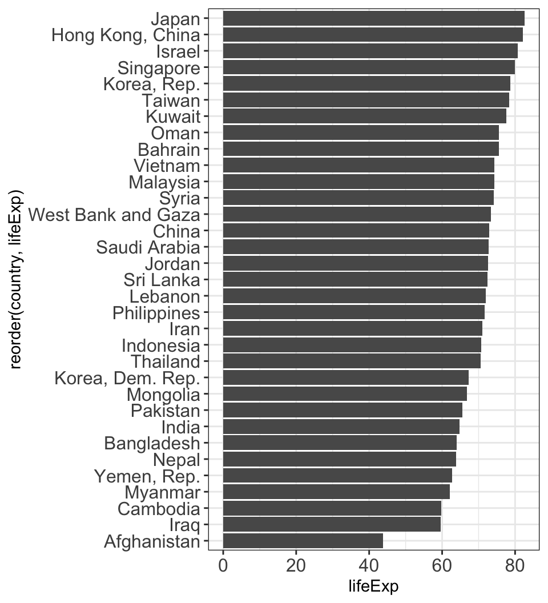
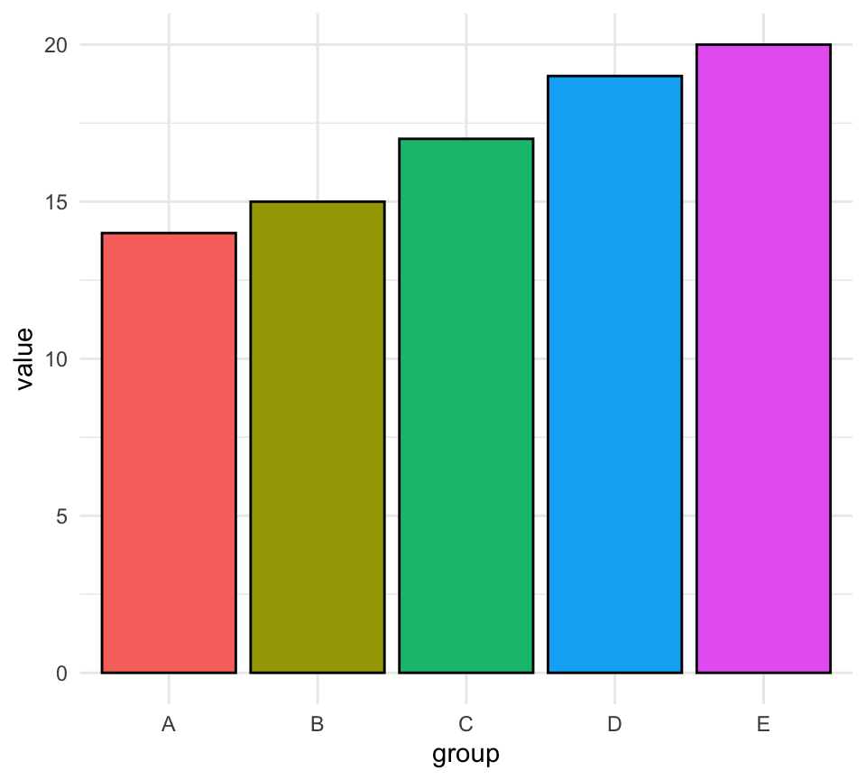
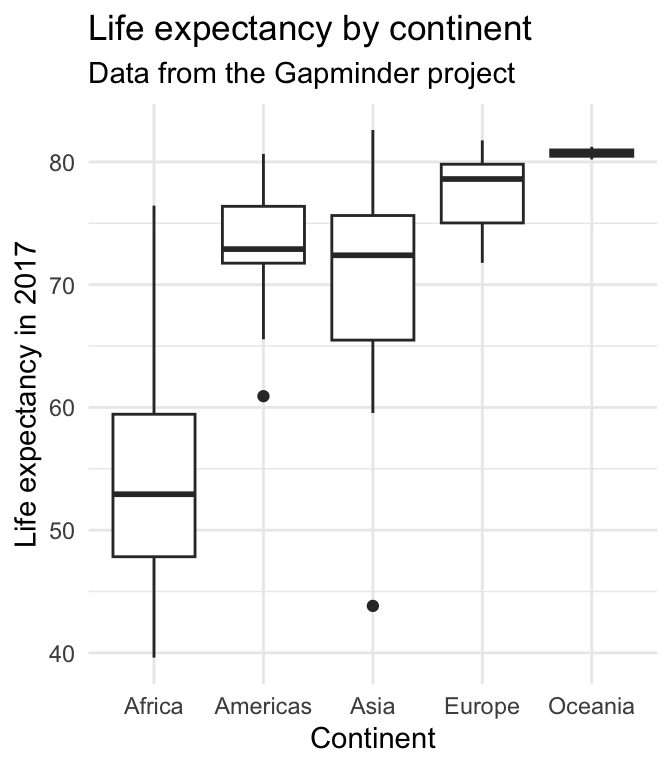
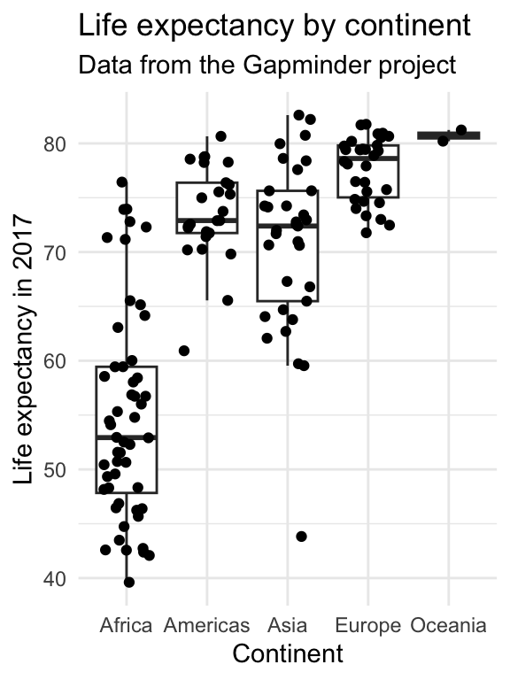
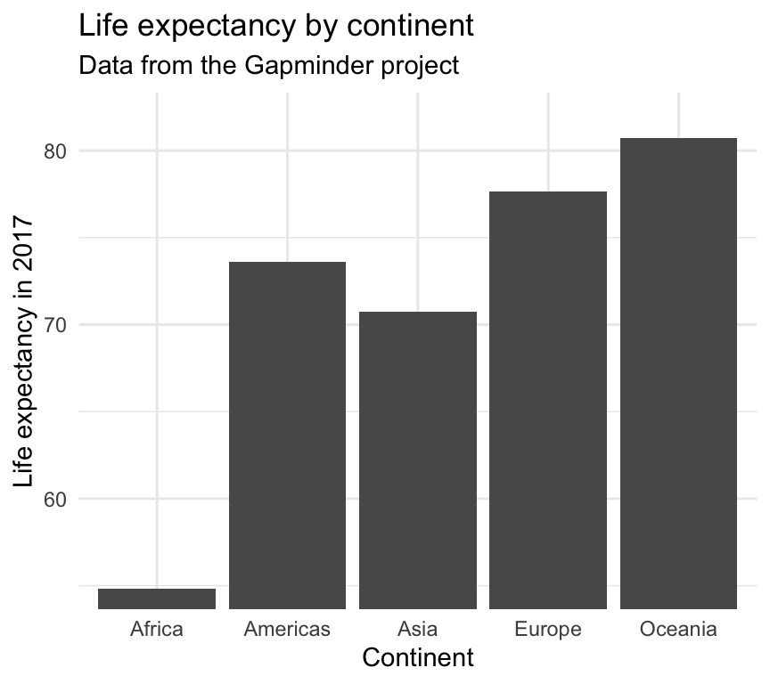

| Date | Module | Topic |
|---|---|---|
| 2024-08-20 | 1: Principles | Principles of data visualization |
| 2024-08-27 | 1: Principles | Good and bad visualizations |
1 - Principles of Data Visualization
Week 1
8/20/2024
💻 🧰 📊 🥳
There may be a data dinosaur 🦖

Figure by Alberto Cairo
To understand distribution
Anscombe’s quartet 🎻


To discover data secrets

Figures from Justin Matejka and George Fitzmaurice
To convey our message

Bilbrey et al., New Phytologist, 2021
The data visualization process

Figure adapted from one by Rick Scavetta
Simple changes improve interpretability

Simple changes improve interpretability


Encoding data with easy-to-process visual clues
Length is easier to see than angles or areas.


Color scales should be intuitive and accessible

These are not.
Show your data if you can
#barbarplots

Show your data if you can
#barbarplots


Show your data if you can
#barbarplots



Cut your axes with care

Cut your axes with care


Avoid figure spaghetti 🍝

Avoid figure spaghetti 🍝

Make sure your plot has a clear message 🍕

Marie Kondo your plots
Declutter, and keep only parts that are informative (and spark joy) 😻

From https://socviz.co/lookatdata.html